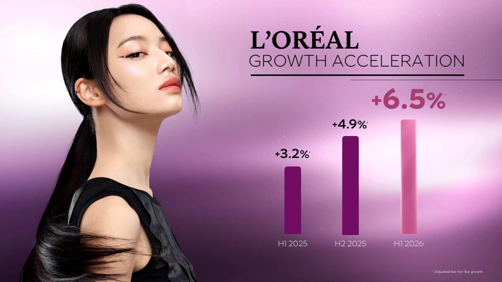

S中国美妆上半年线上线下同步增长，头部集团用高端、皮肤科学和专业渠道放大恢复弹性
7 月 28 日，中国香料香精化妆品工业协会披露，2026 年上半年化妆品全渠道交易额 6114.1 亿元，同比增长 4.35%；线上交易额 3808.87 亿元、增长 5.74%，线下交易额 2305.19 亿元、增长 2.13%，为多年来首次线上线下同时正增长。直播电商交易额超过 2100 亿元，占线上份额约 57%，但抖音交易量增幅高于交易额增幅，低价换量特征明显。未来迹 FBeauty／网易｜搜狐
欧莱雅同期销售额 237.76 亿欧元，调整后同口径增长 6.5%，营业利润率 21.3%；中国市场增速接近市场三倍，高档化妆品、皮肤科学美容和专业美发是主要驱动，电商占北亚销售超过 50%。欧莱雅 2026 年上半年业绩
影响推演：行业总量恢复不代表所有品类和渠道同步受益。美容护肤仍承压，彩妆、香水、儿童护理和专业服务增长更快；直播电商规模仍大，但价格效率下降，品牌需要重新平衡货架电商、内容电商和线下体验的利润贡献。
对产品/市场的含义：产品组合应优先配置具有即时体验、专业证据和清晰场景的品类；渠道评价应同时看交易额、折扣、获客、复购和利润，避免用单一 GMV 判断增长质量。
